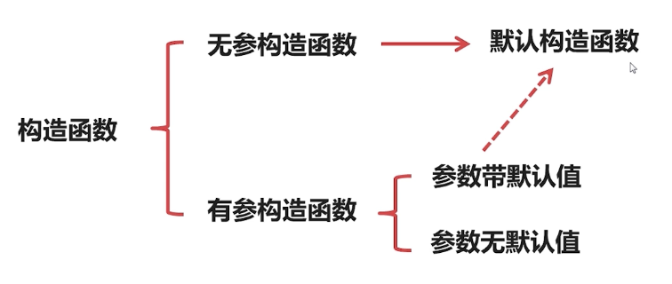

（说实话，我一开始真没觉得构造函数这块有多重要，但是看的视频中老师却花了不少的时间去讲这块内容，本着整理了不亏的心态还是整理了一下）
1.常见的构造函数
C++的类在创建对象的时候，都会去调用构造函数，这种行为是强制的。如果在类中没去写构造函数，程序会自动为你的类创建出构造函数，然后去调用他（这个构造函数的函数体是空的，也没有形参，也不执行任何操作。）；如果你已经写了构造函数，那么程序在运行的时候会去调用你写的构造函数。
构造函数是可以被重载的，一个类可以有多个重载的构造函数，创建对象时根据传递的实参来判断调用哪一个构造函数。
构造函数中又细分出默认构造函数，具体区别有三言两语不好去说明，还是直接上图比较好：

（感觉这块知识点除了学生在期末考试会考到，其他地方真能用到么）
如果看了上图还不能理解，只能放代码了
class Student
{
public:
//Student(){}//无参构造函数，默认构造函数
Student():m_strName("Jim"),m_iAge(10){}//无参构造函数，默认构造函数
/*Student(string _strName,int _iAge)//无参构造函数，参数不带默认值，不是默认构造函数
{
m_strName=_strName;
m_iAge=_iAge;
}*/
Student(string _strName,int _iAge):m_strName("Jim"),m_iAge(10)//无参构造函数，参数带默认值，是默认构造函数
{
m_strName=_strName;
m_iAge=_iAge;
}
private:
string m_strName;
int m_iAge;
}2.拷贝构造函数
定义格式：类名（const 类名& 变量名）
要点1：如果没有自定义的拷贝构造函数，系统会自动生成一个默认的拷贝构造函数。
要点2：当采用直接初始化或复制初始化实例化对象时系统会自动调用拷贝构造函数。
要点3：拷贝构造函数不能被重载。
要点4：拷贝构造函数在参数传递的时候也会被调用。
老惯例，上代码
class abc
{
public:
abc(){};
abc(const abc &aaa){}
private:
int a;
}
void text(abc aa3)
{
}
int main()
{
abc aa;
abc aa1 = aa;//调用拷贝构造函数
abc aa2(aa);//调用拷贝构造函数
text(aa);//调用拷贝构造函数
return 0;
}3.深拷贝和浅拷贝
其中拷贝构造函数分为浅拷贝和深拷贝，继续按照惯例上代码：
#include <iostream> using namespace std; class text { public: text():t_a(0),t_b(0){}; text(const text &aa):t_a(aa.t_a),t_b(aa.t_b){};//浅拷贝 private: int t_a; int t_b; }; int main() { text a; text b = a; return 0; }
在上面的代码中，b就是依靠拷贝的方式初始化的，就是将 a 所在内存中的数据按照二进制位（Bit）复制到 b 所在的内存，这种默认的拷贝行为就是浅拷贝。
有浅就有深，既然有了浅拷贝，那么肯定就会有深拷贝。浅拷贝有它的缺陷，在遇到动态分配的内存、指向其他数据的指针的情况时，就会出现一些BUG，甚至会导致程序的崩溃。下面上一个本该用深拷贝却用浅拷贝的错误代码:
#include <iostream> using namespace std; class Array { public: Array() { m_iCount = 5; m_pArr = new int[m_iCount]; }; Array(const Array &aa) { m_iCount = aa.m_iCount; m_pArr = aa.m_pArr;//此处会导致错误 }; private: int m_iCount; int *m_pArr; }; int main() { Array a; Array b = a; return 0; }
在上面的代码中，a的成员变量m_pArr是个指向动态分配内存的数组的第一个地址的指针，经过浅拷贝，b的成员变量m_pArr也是指向着相同地址，这会导致修改b的数组时，a的数组也会跟着发生变化，当a销毁的时候，b的指针指向的数组则不存在，等等许多问题。所以我们需要作出一些改变来应对这种情况，于是深拷贝应运而生。
按照惯例，放出修改后的代码：
class Array
{
public:
Array()
{
m_iCount = 5;
m_pArr = new int[m_iCount];
};
Array(const Array &aa)
{
m_iCount = aa.m_iCount;
m_pArr = new int[m_iCount];
for (int i; i < m_iCount; i++)
{
m_pArr[i] = aa.m_pArr[i];
}
};
private:
int m_iCount;
int *m_pArr;
};这种将对象所持有的其它资源一并拷贝的行为叫做深拷贝，我们必须显式地定义拷贝构造函数才能达到深拷贝的目的。
所以，什么时候用深拷贝什么时候用浅拷贝呢？
如果一个类拥有指针类型的成员变量，那么绝大部分情况下就需要深拷贝，因为只有这样，才能将指针指向的内容再复制出一份来，让原有对象和新生对象相互独立，彼此之间不受影响。如果类的成员变量没有指针，一般浅拷贝足以。